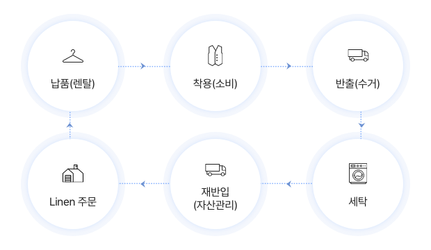

RFID SMART LAUNDRY SERVICE
Dr.세탁 – RFID기반 스마트세탁 서비스
하루를 새롭게 하는 수진기업
ECO VALUE CHAIN
개요
업계 최초 IoT 기반의 세탁물 관리시스템이며 의료기관의 스마트병원 구축의 일부 영역을 지원하고
의료기관의 자산인 Linen과 Medical Ware 관리에 대한 새로운 기준을 제시하는 통합관리 서비스
배경/필요성
린넨물 관리 서비스
의료기관의 대형화 및 확장에 따른 Linen의 인식변화
(단순 소모재 -> 자산관리 필요성 증가)세탁물 관리
고가의 Linen류에 대한 관리의 필요성
(커텐류, VIP병동 Linen)규제 강화
정부기관의 의료기관 세탁물 관리 규제 강화
관리 규칙
의료기관 종사자 근무복 개별 세탁 금지
(의료기관세탁물 관리규칙(보건복지부령)2021년8월11일)피복관리
의료인력의 증가 및 높은 이직률로 인한
피복관리시스템 필요성 증대
근무복 관리
단기근무 퇴사자와 잦은 부서이동으로 인한
근무복 추가 제작에 따른 비용 증가 및 관리의 필요성 대두
특장점
01
의료기관 Linen의 제작
02
운용부터 폐기까지의 Life Cycle을 Tracking
03
국내 유일의 개인복 분류•맞춤 시스템 (자켓,상•하의 기준 시간당 100 Set/1인 구성 작업 가능)
04
세탁업 업무 환경 (防壓, 防水, 防熱, 再使用)에 특화된 인식율 99.99% 보장
05
병원과 세탁공장 간 ICT시스템 연동/동기화로 업무혁신 달성 및 실시간 서비스 실현